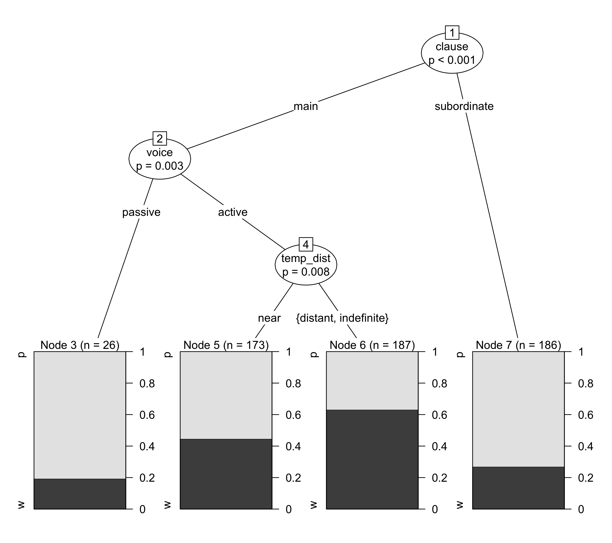
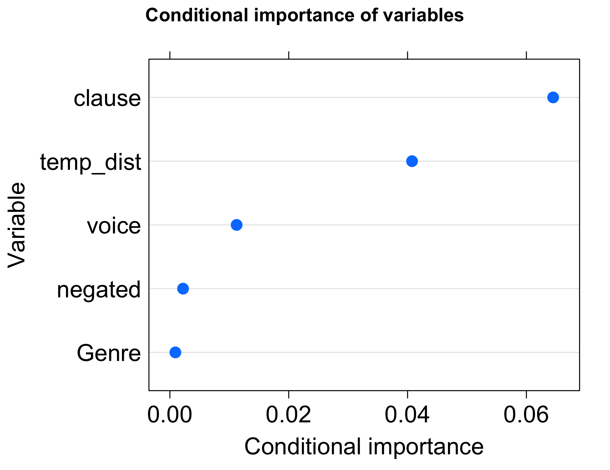
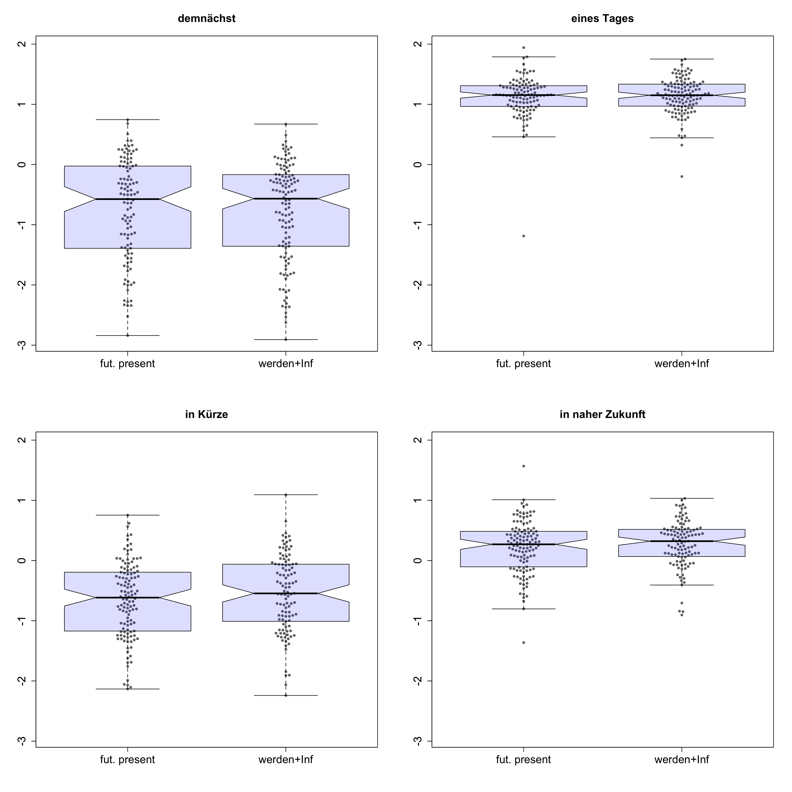

(1) Ich werde morgen ins Kino gehen.
'I will go to the cinema tomorrow.'
(2) Ich gehe morgen ins Kino.
(lit.) 'I go to the cinema tomorrow'
Stefan Hartmann
(1) Ich werde morgen ins Kino gehen.
'I will go to the cinema tomorrow.'
(2) Ich gehe morgen ins Kino.
(lit.) 'I go to the cinema tomorrow'
Previous research
Corpus study: DWDS21
Experimental study
(1) Ich werde morgen ins Kino gehen.
'I will go to the cinema tomorrow.'
(2) Ich gehe morgen ins Kino.
(lit.) 'I go to the cinema tomorrow'
Which factors determine the choice of werden + Inf. vs. futurate present in contemporary German?
Does the choice of werden + Inf. over the futurate present lead to differences in the interpretation of utterances?
Conditional inference trees and random forests (Tagliamonte & Baayen 2012, Schneider 2014, Levshina 2015)
Basic idea: recursive partitioning - algorithm identifies most influential predictor variable and makes a binary split in this variable; this is repeated until no significant predictors are left
p-values obtained via permutation: labels on the observed data points are randomly rearranged - if this doesn't make a difference for the model, the predictor probably isn't important; if it does, the predictor is considered influential.
random forests consist of many conditional inference trees and yield the importance measure for every variable in the model averaged over many conditional trees (Levshina 2015: 292)


TEMPORAL DISTANCE seems to make a difference: werden + Inf. preferred over futurate present when the sentence relates to the more distant future
CLAUSE and VOICE as important formal predictors
however: results are very preliminary at this point!
near vs. distant future
near: up to 1 year or indefinite adverbials referring to the near future, e.g. bald, demnächst
distant: > 1 year, indefinite adverbials referring to more distant future, e.g. in ferner Zukunft
| near | distant | indefinite | |
|---|---|---|---|
| futurate present | 123 | 102 | 97 |
| werden + Infinitive | 60 | 96 | 94 |
inspired by experimental approaches to progressive vs. non-progressive framing in Dutch and German (Flecken & Gerwien 2013, Hartmann 2016)
designed with jsPsych (de Leeuw 2016)
focus on the construal of temporal distance
94 volunteer participants (48 f, 38 m, 8 NA)
17 participants had to be excluded (16 did not move the slider, 1 did not state German as their native language)
analysis using mixed-effects modeling

| Estimate | Std. Error | df | t-value | Pr(>|t|) | |
|---|---|---|---|---|---|
| (Intercept) | -0.63 | 0.17 | 12 | -3.66 | 0.0032** |
| adv: demnächst | -0.16 | 0.24 | 12 | -0.68 | 0.5109 |
| adv: in naher Zukunft | 0.85 | 0.24 | 12 | 3.52 | 0.0043** |
| adv: eines Tages | 1.75 | 0.24 | 12 | 7.15 | 1.20E-05*** |
| framing: werden | 0.05 | 0.03 | 914 | 1.50 | 0.1351 |
werden + Infinitive and futurate present can be used exchangably to a considerable extent
In language production, there seems to be a slight preference for werden + Inf. when referring to distant-future events
In language comprehension, the use of werden + Infinitive does not seem to entail a difference in event construal (at least in the presence of a temporal adverbial)
Both studies presented here limited to future-related utterances with temporal adverbial
results can help understand important aspects of the semantics of both constructions - but for a fuller understanding, follow-up studies are needed
follow-up corpus studies should take data without temporal adverbials into account and add the presence or absence of temporal adverbials as a further predictor
follow-up experimental studies should use a more balanced set of propositions in their stimuli sentences
also, a cross-linguistic approach seems desirable
stefan1.hartmann[at]uni-bamberg.de